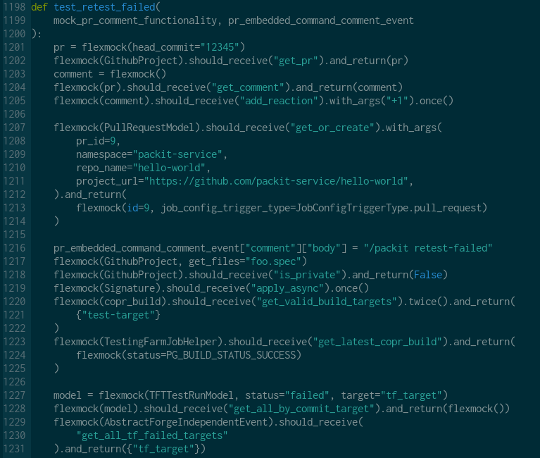
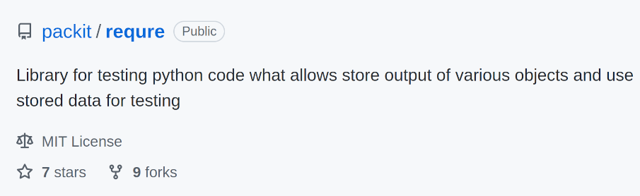
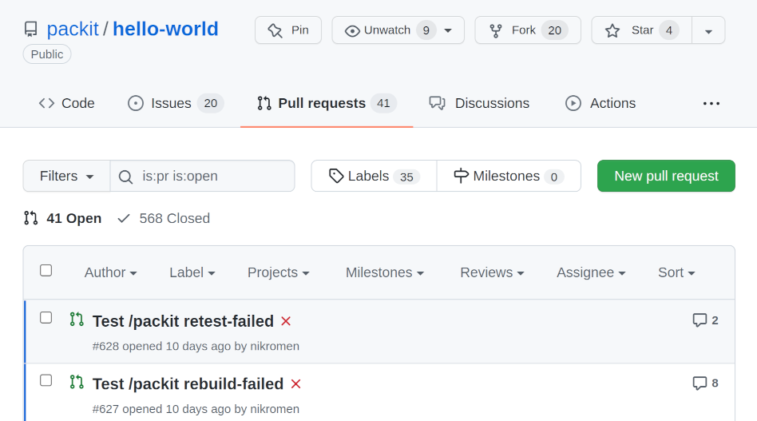
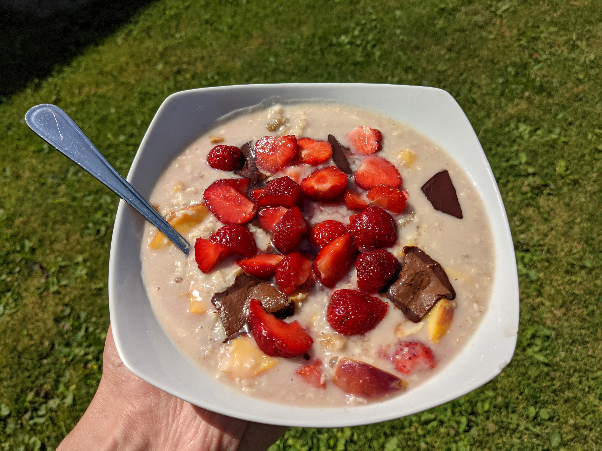

class: center, middle # From unit tests to daily validation jobs ## Tomas Tomecek ## Packit team ??? * ping sgallagh, he wants to join :) * Intro: me * Intro: Packit = Upstream CI system for RPM-packaged projects; TF = testing backend * Fast presentation = let's discuss --- # Above the code <div class="middle center"> </div> ??? * Testing - being on top of our code * ...with more code :D * Freedom to do changes and have confidence they work without issues for us and our users --- # Unit tests <div class="middle center">  </div> ??? * Simple testing without external dependencies * Those are mocked * And not even being funny --- # Integration <div class="middle center"> <img src="church.jpg" width=640 /> </div> ??? * We want to be sure that changes are nicely integrated with all the dependencies * "More real" * Can be expensive * Database * Testing our REST --- # Integration [requre] <div class="middle center">  </div> ??? * "Request recording" * backstabbing python's import system --- # requre [example] <pre><code class="language-python"> class TestLocalProject(PackitTest): @requre.record_requests_module def test_checkout_pr(self): """Test PR checkout with and without merging""" project = LocalProject(git_project=self.project, pr_id=PR_ID) assert project.ref == f"pr/{PR_ID}" # check that HEAD of the merge matches HEAD of main main = project.git_repo.heads["main"] # 'Merge pull request #231 from packit/pre-commit-ci-update-config assert self.commit_title(project) == main.commit.message.split("\n", 1)[0] assert "koji_build" in (project.working_dir / ".packit.yaml").read_text() </code></pre> ??? * No special treatment needed * Network traffic is saved on-disk (secrets cleansed) * It can record anything - whole git repos, or any function calls --- # Continuous deployment <div class="middle center"> <video width="320" autoplay controls> <source src="cat.mp4" type="video/mp4"> Your browser does not support the video tag. </video> </div> <div class="footer small middle"> <a href="https://www.reddit.com/r/Instantregret/comments/srklep/drinking_consequences/">Source</a> </div> ??? * Continuous water stream which we try to drink from * main branches are continuously built and deployed to stg * This what the team uses to validate merged changes --- # `hello-world` <div class="middle center">  </div> ??? * a minimal RPM-packaged upstream project * a functional, E2E place to test functionality for us * errors are in sentry.io --- # Daily validation jobs <div class="middle center">  </div> ??? * Triggered every morning, as our breakfast * A script can rerun easily from a CLI * Putting it all together: sentry.io + E2E test cases + hello-world + stg * If they fail, we are notified in sentry * Both production and stg are validated * Funny story: we've hit an issue recently of the uppoer limit for the number of commits in a PR --- class: middle # The end .left-column[ * <span class="fa fa-github-square"></span> [github.com/TomasTomecek/speaks](https://github.com/TomasTomecek/speaks) * <span class="fa fa-github-square"></span> [github.com/packit](https://github.com/packit) * <span class="fa fa-twitter-square"></span> [@TomasTomec](https://twitter.com/TomasTomec) * <span class="fa fa-globe"></span> [packit.dev](https://packit.dev/) ] .right-column[ ]